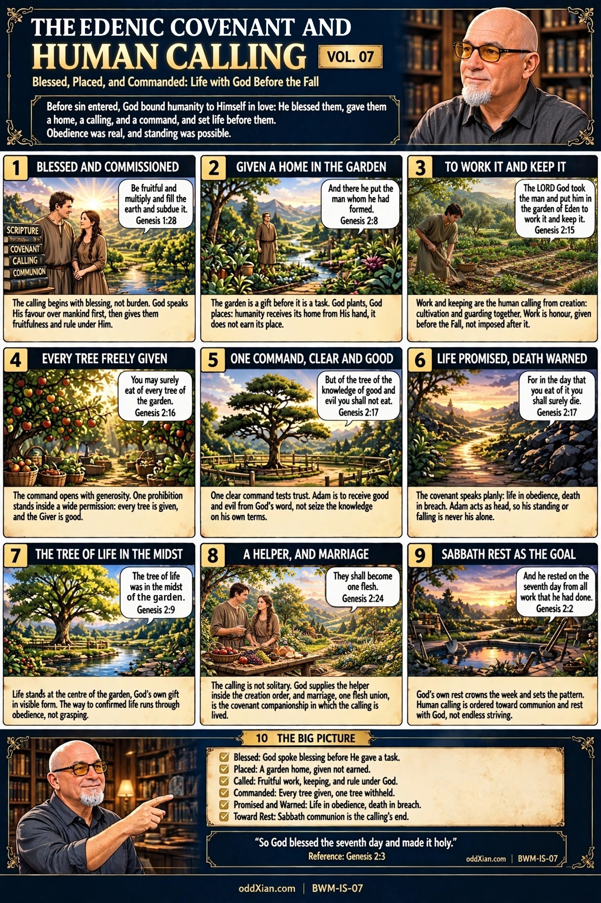

BWM-IS-07 · The Edenic Covenant and Human Calling

The plate, panel by panel
THE EDENIC COVENANT AND HUMAN CALLING. VOL. 07. Subtitle: Blessed, Placed, and Commanded: Life with God Before the Fall. Framing box: Before sin entered, God bound humanity to Himself in love: He blessed them, gave them a home, a calling, and a command, and set life before them. Obedience was real, and standing was possible. Book stack (panel 1): SCRIPTURE, COVENANT, CALLING, COMMUNION.
- BLESSED AND COMMISSIONED. Bubble: "Be fruitful and multiply and fill the earth and subdue it." Genesis 1:28. Caption: The calling begins with blessing, not burden. God speaks His favour over mankind first, then gives them fruitfulness and rule under Him.
- GIVEN A HOME IN THE GARDEN. Bubble: "And there he put the man whom he had formed." Genesis 2:8. Caption: The garden is a gift before it is a task. God plants, God places: humanity receives its home from His hand, it does not earn its place.
- TO WORK IT AND KEEP IT. Bubble: "The LORD God took the man and put him in the garden of Eden to work it and keep it." Genesis 2:15. Caption: Work and keeping are the human calling from creation: cultivation and guarding together. Work is honour, given before the Fall, not imposed after it.
- EVERY TREE FREELY GIVEN. Bubble: "You may surely eat of every tree of the garden." Genesis 2:16. Caption: The command opens with generosity. One prohibition stands inside a wide permission: every tree is given, and the Giver is good.
- ONE COMMAND, CLEAR AND GOOD. Bubble: "But of the tree of the knowledge of good and evil you shall not eat." Genesis 2:17. Caption: One clear command tests trust. Adam is to receive good and evil from God's word, not seize the knowledge on his own terms.
- LIFE PROMISED, DEATH WARNED. Bubble: "For in the day that you eat of it you shall surely die." Genesis 2:17. Caption: The covenant speaks plainly: life in obedience, death in breach. Adam acts as head, so his standing or falling is never his alone.
- THE TREE OF LIFE IN THE MIDST. Bubble: "The tree of life was in the midst of the garden." Genesis 2:9. Caption: Life stands at the centre of the garden, God's own gift in visible form. The way to confirmed life runs through obedience, not grasping.
- A HELPER, AND MARRIAGE. Bubble: "They shall become one flesh." Genesis 2:24. Caption: The calling is not solitary. God supplies the helper inside the creation order, and marriage, one flesh union, is the covenant companionship in which the calling is lived.
- SABBATH REST AS THE GOAL. Bubble: "And he rested on the seventh day from all his work that he had done." Genesis 2:2. Caption: God's own rest crowns the week and sets the pattern. Human calling is ordered toward communion and rest with God, not endless striving.
- THE BIG PICTURE. Checklist: Blessed: God spoke blessing before He gave a task. / Placed: A garden home, given not earned. / Called: Fruitful work, keeping, and rule under God. / Commanded: Every tree given, one tree withheld. / Promised and Warned: Life in obedience, death in breach. / Toward Rest: Sabbath communion is the calling's end. Closing verse: "So God blessed the seventh day and made it holy." Genesis 2:3.
Companion narrative
The Edenic Covenant and Human Calling teaches that life with God before the Fall was already covenantal in substance: a gracious arrangement in which God blessed humanity, gave it a home, a calling, a single clear command, a promise of life with a warning of death, marriage companionship, and the pattern of Sabbath rest. The volume stands between BWM-IS-06 (Humanity in God's Image), whose panel 7 first states the work-and-keep commission, and BWM-IS-08 (The Fall: From Communion to Rebellion), which takes up the breach of this command. Doctrinal anchor: the foundational treatise, Part III (Creation), secs. 5.1, 5.3, 6.1, 7, and 8.3, with axioms III.3 and III.5. Confessional anchors: Westminster Confession of Faith 7.2 and 19.1, with 4.2.
Biblical grounding
Genesis 1:28 is the commission text: God's blessing spoken over mankind, with fruitfulness, filling, subduing, and dominion as its content; blessing precedes task, and the verbs are gifts before they are duties. Genesis 2:8 and 2:15 give placement and vocation: God plants the garden, puts the man there, and gives the garden to be worked and kept; the work-and-keep pair (avad and shamar) is the pair later used for sanctuary service, which is the basis, and the limit, of the priestly colouring discussed below. Genesis 2:16-17 gives the command in its full form: a wide permission (every tree), a single prohibition (one tree), and a stated sanction (death in the day of eating). Genesis 2:9 places the tree of life in the midst of the garden, and Genesis 3:22-24, read back only as the narrative's own sequel, confirms that access to the tree of life is the point at which obedience, breach, and confirmed life meet. Genesis 2:18 and 2:23-24 give companionship and marriage; Genesis 2:2-3 gives the Sabbath pattern: God finishes, rests, blesses the seventh day, and makes it holy. Romans 5:12-19 and 1 Corinthians 15:45-49 supply the headship consequence retrospectively: Adam acts as a public head, so his obedience or disobedience cannot remain a private matter. Hosea 6:7, the one text that joins Adam and covenant in a single clause, is recorded as supporting and disputed, and no panel claim rests on it.
Doctrinal derivation
God initiates every element: blessing, garden, placement, permission, command, helper, and rest are all His acts before they are human responses (Genesis 1:28; 2:8, 15-18). The command is morally serious and its sanction is stated, not implied (Genesis 2:17). Adam's state was upright and mutable (Ecclesiastes 7:29; treatise axiom III.5): he received an aid of the without-which kind, could forsake it, had not received constancy to persevere, and might have stood. Adam acts as head, so the arrangement's outcome bears on his posterity (Romans 5:12-19; WCF 7.2: in him to his posterity). Consequences: calling precedes curse, so work, marriage, and rule are creation gifts and none of them can be read as a product of sin. Generosity precedes prohibition in the text's own order, so the command cannot fairly be pictured as a grudging restriction; one tree is withheld inside a garden given whole. And because confirmation was not yet received, the arrangement is genuinely open at the human side: obedience was possible, which is what makes the coming breach culpable rather than mechanical.
Synthesis, labeled as synthesis: three elements of the plate are synthesis at MEDIUM, and they are carried at that grade. The priestly colouring of work-and-keep (panel 3) rests on the verb pair's sanctuary associations; Genesis 2 does not call the garden a temple in so many words. The tree of life as the sign of confirmed life through obedience (panel 7) joins the tree's placement in Genesis 2:9 and its guarding in Genesis 3:22-24 to the treatise's two-states synthesis (axiom III.3). Sabbath rest as the calling's goal (panel 9) reads Genesis 2:2-3 with the canon's rest arc; it is not a lexical claim about Genesis 2:2-3 alone. Limits: Genesis does not apply the word covenant to Eden, and this volume does not pretend otherwise; the claim is about substance (a divinely initiated bond with stipulation, promise, warning, and headship), stated in the Confession's later vocabulary, and the title names the covenant Edenic rather than Original, Original belonging to the eternal covenant (JD ruling, 2026-11-13). Vos and Bavinck on Eden's pre-redemptive eschatology stand in the treatise register as not yet consulted; no originality claim is made for this volume's arrangement, and neither is cited for anything here.
Claim register
| Claim | Classification | Primary support | Confidence |
| The calling begins with God's blessing and commission to fruitfulness and rule | Direct teaching | Genesis 1:28 | HIGH |
| God planted the garden and placed the man there; home is received, not earned | Direct teaching | Genesis 2:8 | HIGH |
| Working and keeping the garden is the creation vocation, before the Fall | Direct teaching; priestly colouring is synthesis | Genesis 2:15 | HIGH; synthesis MEDIUM |
| The command opens with wide permission: every tree given | Direct teaching | Genesis 2:16 | HIGH |
| One clear prohibition: the tree of the knowledge of good and evil | Direct teaching | Genesis 2:17a | HIGH |
| Life is promised on obedience and death threatened on breach, with Adam as head | Historical formulation (WCF 7.2; 19.1) on direct teaching | Genesis 2:17b; Romans 5:12-19 | HIGH as a report of the Confession; HIGH for the warning text |
| The tree of life stands in the midst of the garden as God's gift of life | Direct teaching; confirmed-life framing is synthesis | Genesis 2:9 | HIGH; synthesis MEDIUM |
| Marriage, one-flesh union, is the companionship in which the calling is lived | Direct teaching | Genesis 2:18, 23-24 | HIGH |
| God's Sabbath rest crowns the creation week and patterns the calling | Direct teaching; goal framing is synthesis | Genesis 2:2-3 | HIGH; synthesis MEDIUM |
| Panel 10 summarizes the volume without new claims | Synthesis (summary) | Panels 1-9 | HIGH |